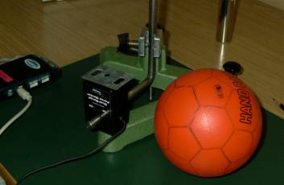
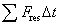
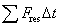
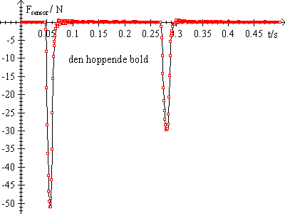
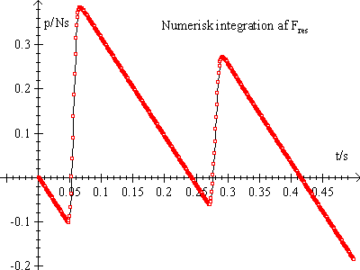

FormålAt eftervise impulssætningen
ApparaturForce-sensor 10N/50N, LabPro (eller CBL), en bold og programmet Datalyse. |
 |
Anbring Force-sensoren forsynet med en »faldplade« på et solidt underlag, fx en stor trefod. Monter en stativstang, så boldens faldhøjde kan måles præcist.
Stil sonden på området 50 N og sæt den i kanal 1 på LabPro. Start programmet Datalyse.
Nu kan forsøget begynde: Vælg »Scan på flere kanaler«
På fanebladet indgange vælges tid til 0,001 s, antal målinger til 500 og sonde på kanal 1 til auto spænding ±10 volt.
På fanebladet kontrol vælges: trigning: ++ stigende, trigværdi 2,8 volt og prestore 10%.
Klik på OK og slip bolden.
Når de målte data er overført til tabellen i Datalyse vælges Funktioner, Vernier konvertering. Vælg Force-sensor. Nu kan grafen (t, F(t)) tegnes.
Foretag forsøg med forskellige faldhøjder. Vælg Gem tabel som… efter hvert forsøg.
Beregn boldens impulstilvækst ved at udregne boldens hastighed før stødet og efter stødet. Hastigheden før stødet beregnes vha. faldhøjden. Hastigheden efter stødet beregnes ved at aflæse tiden mellem de to stød på grafen.
Summen
 
Gentag forsøget med forskellige faldhøjder.
Force-sensoren er normalt forsynet med en trækkrog. Denne afmonteres og i stedet monteres en plade. Kik i rodekassen med pc skruer efter en skrue til fastgørelse af pladen.
Den monterede plade belaster sonden. Der kan tages højde for dette på 2 måder:
a) Kalibrer sonden. Fanebladet kalibrer i menuen »Mål (t, f(t))« kan benyttes. Som belastning kan benyttes 1) ingen belastning 2) 1 kg. Skriv dine kalibreringsdata i filen »Vernier.ini«, som befinder sig i samme mappe, som programmet Datalyse.
b) Foretag en indledende måling, og træk den målte kraft fra i det reelle forsøg.
Det havde været lettere, om LabPro kunne trigge på Force-sensoren direkte, men det kan den desværre kan man ikke!

